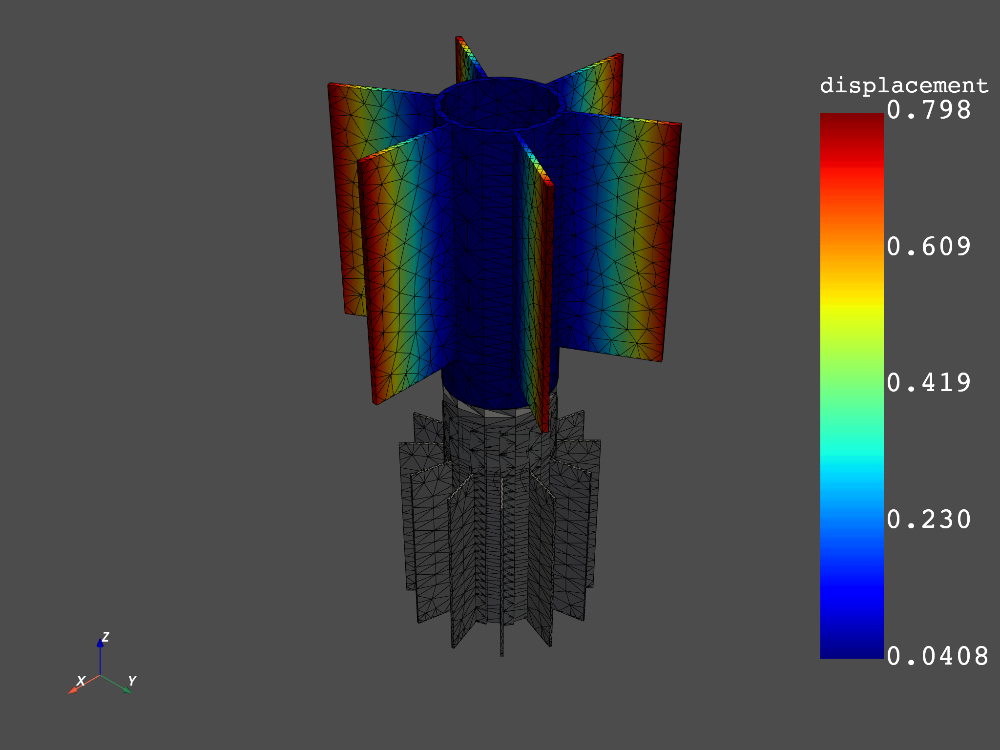
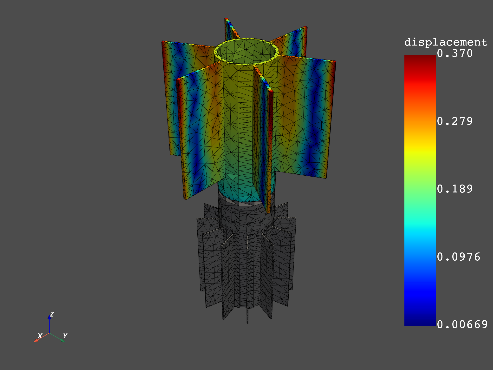
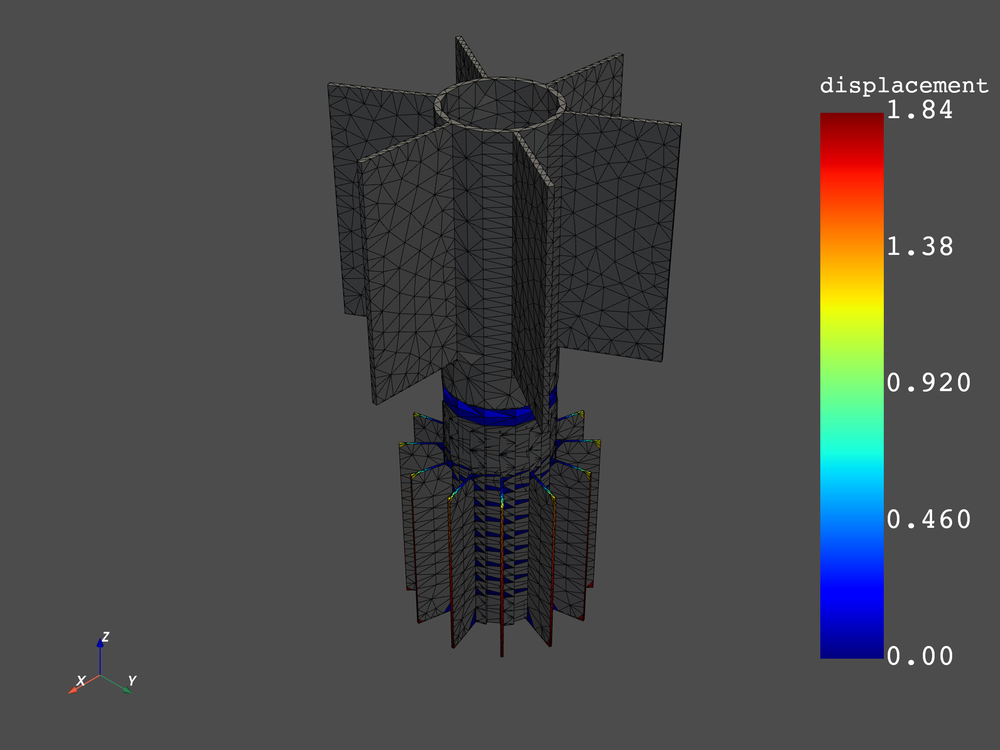
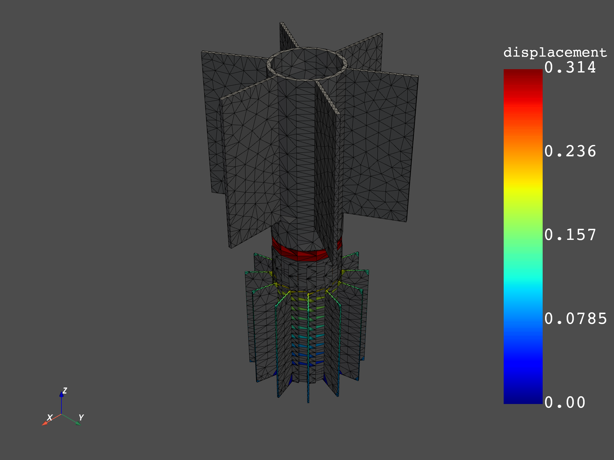

Note
Click here to download the full example code
Use Result Helpers to Load Custom Data¶
The Result class which instances are created by the Model gives access to helpers to request results on specific mesh and time scopings. With those helpers, working on a custom spatial and temporal subset of the model is straightforward.
import numpy as np
from ansys.dpf import core as dpf
from ansys.dpf.core import examples
from ansys.dpf.core import operators as ops
First, create a model object to establish a connection with an example result file
model = dpf.Model(examples.download_multi_stage_cyclic_result())
print(model)
Out:
DPF Model
------------------------------
DPF Result Info
Analysis: modal
Physics Type: mecanic
Unit system: MKS: m, kg, N, s, V, A, degC
Available results:
U Displacement :nodal displacements
S Stress :element nodal component stresses
EPEL Strain :element nodal component elastic strains
BFE Temperature :element structural nodal temperatures
With multi_stage cyclic symmetry on 2 stages
------------------------------
DPF Meshed Region:
3595 nodes
1557 elements
Unit: m
With solid (3D) elements
------------------------------
DPF Time/Freq Support:
Number of sets: 6
Cumulative Frequency (Hz) LoadStep Substep Harmonic index
1 188.385357 1 1 0.000000
2 325.126418 1 2 0.000000
3 595.320548 1 3 0.000000
4 638.189511 1 4 0.000000
5 775.669703 1 5 0.000000
6 928.278013 1 6 0.000000
Visualize specific mode shapes¶
Choose the modes to visualize
modes = [1,5,6]
disp = model.results.displacement.on_time_scoping(modes)
Choose a spatial subset¶
Work only a named selection (or component)
Print the available named selection
print(model.metadata.available_named_selections)
Out:
['BC', 'ELM', 'STAG1', 'STAG1HIGH', 'STAG1LOW', 'STAG2', 'STAG2HIGH', 'STAG2LOW', '_BC_NOD', '_FIXEDSU', '_INTF_ELM', '_INTF_NOD', '_NOD', '_STAG1_BASE_ELM', '_STAG1_BASE_NOD', '_STAG1_CYCHIGH_NOD', '_STAG1_CYCLOW_NOD', '_STAG2_BASE_ELM', '_STAG2_BASE_NOD', '_STAG2_CYCHIGH_NOD', '_STAG2_CYCLOW_NOD']
Specify to the result that we work on a specific named selection
disp.on_named_selection('_STAG1_BASE_NOD')
op = disp()
op.inputs.read_cyclic(2)#expand cyclic
results = op.outputs.fields_container()
#plot
for mode in modes:
results[0].meshed_region.plot(results.get_fields_by_time_complex_ids(mode, 0)[0])
- 
- 

Specify to the result that we work on specific nodes
disp = model.results.displacement.on_time_scoping(modes)
disp.on_mesh_scoping(list(range(1, 200)))
op = disp()
op.inputs.read_cyclic(2)#expand cyclic
results = op.outputs.fields_container()
#plot
for mode in modes:
results[0].meshed_region.plot(results.get_fields_by_time_complex_ids(mode, 0)[0])

- 
- 
Total running time of the script: ( 0 minutes 6.627 seconds)